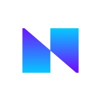

Aatman Shah
> Experienced Software Engineer based in Sacramento, CA.
> Passionate about building scalable, performant backend systems and infrastructure.
Experience
- Migrated legacy data collection endpoints to scalable services reducing load on CoreDB (hundreds of millions of requests/day).
- Moved a real-time aggregation service from EC2 to ECS Fargate, improving latency by 19% using S3-based stateless cache.
- Handled on-call production support and critical issue resolution.
- Worked with Java 17, Kotlin, Python 3, Spring, AWS (EKS, ECS), Datadog, Snowflake.
General Motors – Software Engineer (Mar 2020 – May 2022)
- Decomposed monoliths into microservices improving performance by 3–5x; implemented parallel request processing.
- Integrated Apache Kafka for async messaging; deployed via Pivotal Cloud Foundry.
- Used Java, Spring, API Gateways, MySQL, IntelliJ, CI/CD tools.

Nisum Technologies – Software Engineer, Intern (Jun 2019 – Aug 2019)
- Built backend for a RESTful e-commerce system using Java + Spring.
- Migrated the service to Azure and set up Jenkins for CI/CD.
Beehive AI – Software Engineering Intern (Feb 2019 – May 2019)
Education
Santa Clara University – B.S. Computer Science (2016 – 2019)
Relevant coursework: Algorithms, Data Structures, OOP, Networks, Logic Design, Software Design
Hobbies
> Bowling
> Finance
> Philosophy
> Automotive
> Space